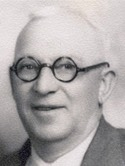

GMBH Tree - Family Card
GMBH Tree - Family Card
John Peter Rau(abt 1828 - 1 May 1897)Joseph Laporte(10 Feb 1836 - 7 Mar 1879)
Marianne Schneider(15 Nov 1831 - aft 1911)Marie Denomme(26 May 1838 - 8 Dec 1893)
m. 17 Jan 1893, St-Pierre-aux-Bouleaux, St-Joseph, Hay Twp, Huron Co, Ontario, Canada


b. 2 Aug 1869, Ontario, Canada
d. 6 Aug 1933, Huron Co, Ontario, Canada
br. 8 Aug 1933, Drysdale, Ontario, Canada
occ. Farmer
edu.
rel. Roman Catholic
bp.
cen. 1901, Stanley, Huron Co, Ontario, Canada

b. 2 Aug 1873, Drysdale, Huron Co, Ontario, Canada
d. 5 May 1953, Canada
br.
occ.
edu.
rel. Roman Catholic
bp.
cen.
Children
John Leo Rau(1 May 1896 - 25 Nov 1977)
Joseph Edward (Ted) Rau(31 Aug 1897 - May 1967)
> Verda Marie Rau(15 Oct 1899 - 27 Jan 1991)
Pierre Napoleon Rau(22 Sep 1901 - 18 May 1911)
Claude Henry Rau(9 May 1904 - 14 Aug 1976)
Nola Merley Rau(11 Mar 1906 - 5 May 1906)
Blanche Antoinette Rau(Apr 1907 - aft 1928)
Charles Rudolph Rau(Feb 1910 - 1 Feb 1988)
Florence Bernadette Rau(30 Apr 1912 - 22 Jun 2010)
Irene Rau(1 Apr 1914 - 10 Aug 2000)
Gerald Anthony Rau(abt 1919 - abt 1991)